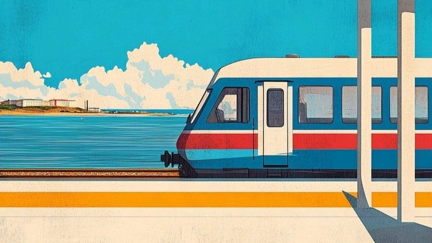

Le voyage commence sur les rails
Trouvez vos TGVmax réservables
Trouvez vos TGVmax réservables
Découvrez les meilleures destinations accessibles avec votre TGVmax
L'effervescence à deux pas de la gare.
Le petit plus TrainNomad : Arrivée directe en plein cœur de ville (Montparnasse ou Gare de Lyon).
Que ce soit pour une expo au Louvre ou une balade sur les quais de Seine, Paris est la destination parfaite pour une escapade improvisée avec votre Pass.
Entre Rhône et Saône, l'art de vivre à la française.
Le petit plus TrainNomad : La ville la mieux connectée par le réseau TGV.
Prenez de la hauteur sur la colline de Fourvière ou perdez-vous dans les traboules. Lyon se savoure autant qu'elle se visite, à seulement 2h de Paris.

Le grand bleu au bout du rail.
Le petit plus TrainNomad : Le dépaysement total sans quitter la France.
Posez vos valises à Saint-Charles et plongez directement dans l'ambiance du Sud. Entre mer et culture, Marseille est la destination évasion par excellence.
Le calendrier vous permet de visualiser rapidement les disponibilités TGVmax et de trouver facilement les meilleurs créneaux pour voyager.
Sélectionnez votre gare de départ sur la carte et découvrez toutes les destinations accessibles en TGVmax. Visualisez les trajets directs et avec correspondances.
Consultez les horaires précis, les correspondances, les temps d'attente et toutes les informations nécessaires pour planifier votre voyage en toute sérénité.
Si vos dates sont flexibles, utilisez le formulaire ci-dessus pour rechercher un voyage spécifique. Ensuite, ajustez les options calendrier sur la page Rechercher pour trouver les jours disponibles et le nombre de billets.